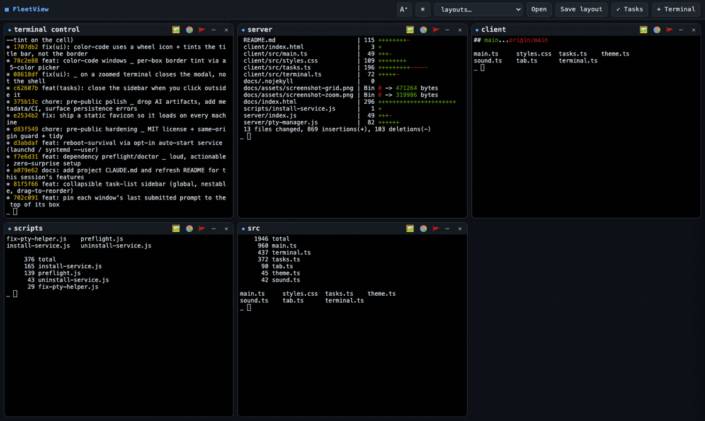
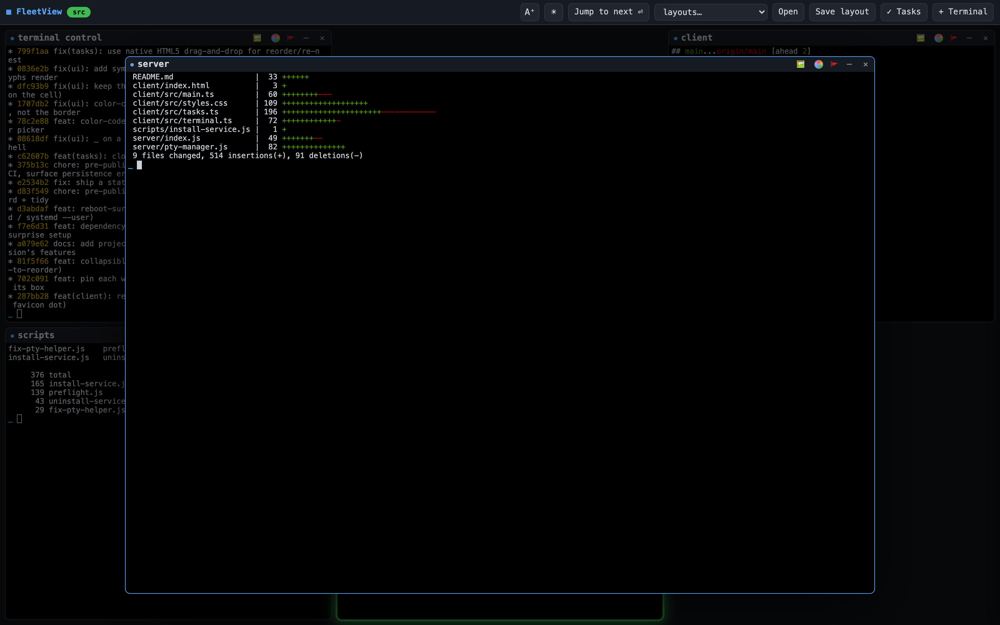

One window.
A grid of real terminals.
Run a Claude in every box. When one needs your approval or finishes, its box glows, dings, and a chip jumps to the top bar — so you can drive a whole fleet of agents and never miss the one waiting on you.

Built for running many agents at once
Real shells, real durability, and alerting that comes straight from Claude — not from scraping the screen.
A grid of real shells
One node-pty terminal per box — the actual claude, or any shell. Not a wrapper, not a mock.
Attention, not scraping
Claude Code hooks tell FleetView exactly which box needs you. Glow, ding, and a browser-tab badge — nothing parsed from terminal text.
Zoom to focus
Click a box and it flies to the center over a dimmed grid. Click away or hit Esc and it flies home.
Sleep-safe & restart-proof
Every box runs in a detached tmux session, so your Claudes survive a server restart and auto-reconnect after the laptop sleeps.
Never lose a session
If a session dies or you set it aside, the box lands in a recovery bar — reattachable with full state, never silently dropped.
Layouts & tasks
Save and restore whole sets of terminals. Plus a nestable, drag-to-reorder task list synced live across every window.
Make it yours
Light/dark, large-text mode, and per-box border color-coding — all persisted across reloads.
Local-only by default
Binds to 127.0.0.1 with a same-origin / anti-DNS-rebind guard. No accounts, no telemetry, no public surface.

The alert comes from Claude itself
Each terminal is spawned with a unique FLEET_PANE_ID. FleetView installs three guarded Claude Code hooks, so Claude reports exactly which box needs attention.
Nothing is parsed from the terminal. The hooks are a no-op in any shell that isn't a FleetView terminal, and you can remove them any time.
Read the details ↗Quick start
Needs Node.js on macOS or Linux. tmux is strongly recommended (it's what makes terminals durable).
# clone, then: npm install # builds node-pty (native) + pulls xterm/vite npm run doctor # checks tmux / curl / claude; offers to install tmux npm run go # build the client, then start the server # open http://localhost:4280 → click "+ Terminal" → pick a folder
Local tool, no auth. Reaching the port means running shells on the host, so FleetView binds to loopback only. Never expose it publicly — front remote access with a private tailnet (Tailscale). See the Security and Remote access docs.